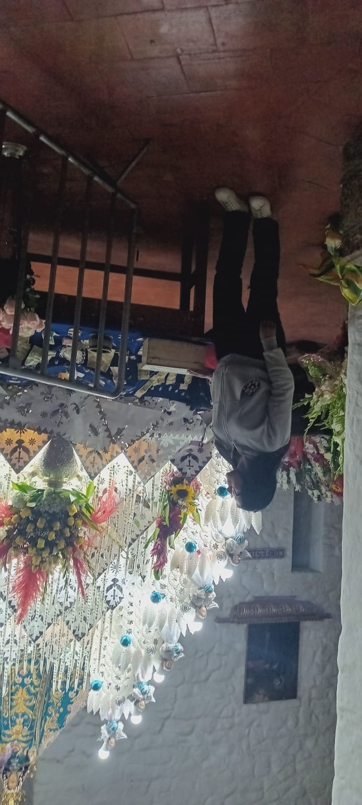

🌍 Mis Viajes
Cada viaje es una transformación. cada paso dejó una huella en mi corazón.
Inicio
Recuerdos de viaje

Mi primer viaje a Cocharca: frío, polvo y chirimoyas recien cosechadas.
Una caminata por todo el santuario de la virgen de Cocharcas.